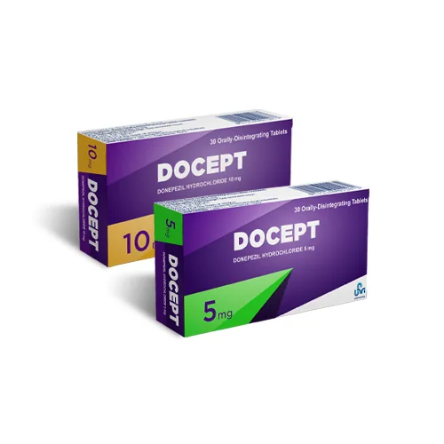
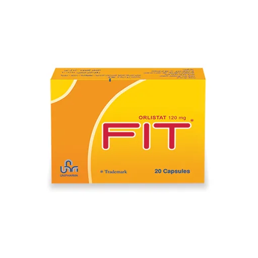

عرض لمجلس إدارة مستودع معتوق
فينيق


فينيق
قناة طلب رقمية بين
مستودع معتوق والصيدليات
اللاذقية · تشرين الأول 2026
اللاذقية · تشرين الأول 2026





وفي نهايتها يرى المجلس ما حدث فعلاً: كم صيدلية طلبت، وكم طلبية وصلت، وبأي قيمة. ثم يقرر: الاستمرار، أو التوسع إلى الفرعين الآخرين، أو التوقف.